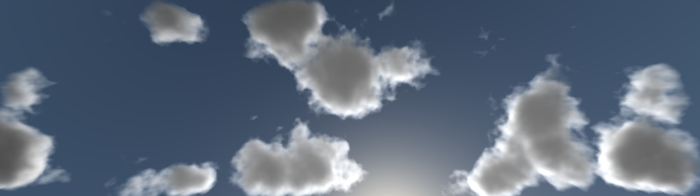

building clouds from randomness

rendered with ao「青」
preamble
Can we say there’s anything not random?
When looking at the picture of life from a human perspective, everything is perfectly defined; it all looks like it has a purpose. However, questioning life from a broader perspective makes the very concept of existence seem absurd. How can anything be? Rather, why can anything be? This sort of basic questions, to which we have no answer, are a good reminder of just how random life is. We don’t even know why we’re here, yet we know why we engage in complex activities such as finishing this sentence. In general terms, we fail to understand the fundamental reasons behind our mere existence, understanding only that which we arbitrarily build on top of it. The only explanation I can give to such a bizarre situation is pure and absolute randomness. After all, we are living on a wet rock wandering around space.
To avoid falling into complete nihilism, I prefer thinking that everything is indefinitely random. I believe that’s not only fair but also elegant; randomness underlies the core of our very existence. Thus, being able to compute it is central to, not only the accurate simulation of the universe, but its understanding too.
That being said, let’s talk about how can we use randomness to model the specific part of the universe that concerns us today.
Clouds.
Round, fluffy, and—in my opinion—quite magnificient. You could probably identify an infinite number of different clouds as clouds; there’s a common pattern to all of them. That is, they’re made of water (mostly), so the way light interacts with them is similar among the different types of clouds—giving them their characteristic look. The main parameter that makes every cloud unique is its shape. Therefore, we could deduce that defining the shape of a cloud with randomness and uniformely rendering them will yield organic results.
“But it doesn’t make sense to define the shape of something with randomness!” — I hear you say. You’re partially right; it doesn’t make much sense to define the shape of something we already know with pure randomness. However, when we apply some rules and constraints to randomness—that is, we arrange randomness—things turn out to be a lot more interesting.
noise
Noise is arranged randomness (although that’s only the way I personally like to think about it and not a real definition). Extending this line of reasoning, we can think of nature itself as arranged randomness too. Clouds are a part of nature, which means there must be a way to arrange randomness which will inevitably result in clouds.
Worley noise is a simple way to arrange randomness capable of generating Voronoi diagrams: a pattern found all over nature. My implementation is not too different from the one described in the original paper by Steve Worley; thus, I won’t dwell on a detailed explanation.
-
Imagine we have a cube.
-
We divide that cube into n^3 cells.
-
For each cell, we compute three random floating point values in the range [0, 1] representing the coordinates of a point within that cell.
-
We assign a resolution r. We loop r^3 times (each row, column, and depth layer), computing at every point the distance to the closest point (which turns out to be a smooth transition). To accomplish this, we can obtain the cell to which the current point belongs by computing the floor of the coordinates of the point and iterating through every adjacent cell (26 times in three dimensions).
-
To each texel we assign the value one minus the square root of the minimum distance to a point.
In addition, we must consider whether the current cell is located at the boundaries of the cube. If that’s the case, in order to avoid discontinuity on the resulting texture, we must take into account the cells that would be posed in the cell’s boundaries if the texture repeated continuously along every axis.
You can see the result of the described algorithm in the following gif, where I’m iterating over the different depth layers of a 256x256x256 Worley noise 3D texture.

Although this starts to look promising, you probably haven’t seen many clouds with perfectly delimited boundaries such as the ones we can see here. Fortunately, that has an easy solution.
Combining different layers of worley noise with different frequencies gives a much more organic result. I used a persistency parameter p to determine how mixed up the layers should be. The first one has a weight of 1, the second one has a weight of p, and the third one has a weight of p^2. This value is normalized over 1 + p + p^2.
Three layers of worley noise with increasingly lower frequencies mixed using a persistency parameter.

This looks more natural and, although we’re still a bit far away from mastering cloudcraftship, we are done with the main building block for this whole thing.
implementation
The noise textures only require to be computed once for every kind of cloud, and the algorithm to generate them is fast when working with two dimensional, low resolution textures. However, when computing three dimensional and high resolution textures (for example, the main noise texture used in ao is 256x256x256 texels by default), rendering times increase dramatically, slowing down the startup of the program. That’s why I used OpenGL compute shaders to render the noise textures, making full use of the, usually more advanced, graphics processing unit. The idea is to first compute an array of randomly generated points in the CPU side and then dispatch the compute shaders, to which I pass this array of points as SSBOs (shader storage buffer objects). The compute shaders parallelly write the resulting computations for each texel to a 3D texture (image3D).
good. we have noise. now what?
Well, we need even more noise.
I use three different noise textures in ao. I’ll proceed to explain each one of them in order of decreasing relevance.
-
First, a main noise 3D texture; this texture defines the main body of the clouds.
-
Second, a detail noise 3D texture; this texture should have less resolution than the main texture, and it will serve the purpose of adding detail to the edges of the cloud.
-
Third, a weather noise 2D (or 3D) texture; this one determines where should we consider computing clouds. Although it’s not essential for a small number of clouds, it makes it harder to notice a repetition pattern when you’re looking at a large number of them, making the simulation more realistic.
(Note that the number of subdivisions and persistence parameter should be modulated according to the kind of cloud intented to achieve. The same applies to the rest of variables here. Also, this is just the way I decided to do things; depending on your specific application you may need -2, 2, or 20 more noise layers.)
Using these noise layers, we can already build the density function \(density(\vec{pos})\), where \(\vec{pos}\) is a vector representing a point in space. There’s not a magic formula to writing a good density function, as it will depend on the project’s intrinsecalities. The only requirement for it is to return the density produced by the combination of the different noise layers properly scaled to the specified frame of reference.
That just means that the function will sample values from the noise textures and combine them in a way that makes sense in our context.
This is the density function I came up with for ao:
float density(vec3 pos) {
float time = frame / 1000.0;
vec3 lower_bound = cloud_location - cloud_volume;
vec3 upper_bound = cloud_location + cloud_volume;
// edge weight.
// to not cut off the clouds abruptly
float distance_edge_x = min(cloud_volume_edge_fade_distance, min(pos.x - lower_bound.x, upper_bound.x - pos.x));
float distance_edge_z = min(cloud_volume_edge_fade_distance, min(pos.z - lower_bound.z, upper_bound.z - pos.z));
float edge_weight = min(distance_edge_x, distance_edge_z) / cloud_volume_edge_fade_distance;
// !!! -> round cloud based on height - probably not an efficient approach
// https://www.desmos.com/calculator/lg2fhwtxvo
float height = 1.0 - pow((pos.y - lower_bound.y) / (2.0 * cloud_volume.y), 4);
// 2d worley noise to decide where can clouds be rendered
vec2 weather_sample_location = pos.xz / noise_weather_scale + noise_weather_offset + wind_vector.xz * wind_weather_weight * time;
float weather = max(texture(noise_weather_texture, weather_sample_location).r, 0.0);
weather = max(weather - cloud_density_threshold, 0.0);
// main cloud shape noise
vec3 main_sample_location = pos / noise_main_scale + noise_main_offset + wind_vector * wind_main_weight * time;
float main_noise_fbm = texture(noise_main_texture, main_sample_location).r;
// total density at current point obtained from these values
float density = max(0.0, main_noise_fbm * height * weather * edge_weight - cloud_density_threshold);
if (density > 0.0) {
// add detail to cloud's shape
vec3 detail_sample_location = pos / noise_detail_scale + noise_detail_offset + wind_vector * wind_detail_weight * time;
float detail_noise_fbm = texture(noise_detail_texture, detail_sample_location).r;
density -= detail_noise_fbm * noise_detail_weight;
return max(0.0, density * cloud_density_multiplier);
}
return 0.0;
}
As you can see, the function samples the weather 2D noise and main 3D noise and checks whether the density is above a minimum threshold or not. In affirmative case, it subtracts the detail 3D noise from the resulting density (so that the edges look organic, as I previously mentioned). Otherwise, it returns a density of 0 (simply meaning there’s no cloud at that point).
Note:
-
The distance to the edges of the rendering volume (in this case a cube, as we’ll see later on) is calculated and stored in the variable “edge_weight”. This makes it less likely for clouds to form in the edges of the rendering volume, avoiding hard discontinuities in these regions.
-
The y-component of the \(\vec{pos}\) vector is taken into account to calculate the variable “height”, using a fourth degree polynomial to round the upper edges of the clouds.
-
The different noise layers are scaled with the external variables (uniforms) “noise_main_scale”, “noise_weather_scale”, and “noise_detail_scale”.
-
The resulting density value is multiplied by a “cloud_density_multiplier” variable, which turns out to be exactly what its name is: a factor that scales the cloud’s density.
This is very nice; we can now sample the density of different noise layers that resemble clouds. However, you probably want to restrict density sampling to a specific region in space, rendering the clouds exclusively within that space. That brings our focus to raytracing.
raytracing
Assuming clouds are bound to form in accurately delimited regions of space, and assuming these regions can be expressed as simple geometrical shapes (cube, cylinder, etc.), raytracing is an efficient approach.
By “raytracing” I simply mean a function that tells us, if we moved along a certain direction, how much would we have to move in order to hit a solid and, once we hit it, how much would we have to move along the same direction to get out of it. We’ll call that function \(boxDistance(\vec{ori}, \vec{dir}, \vec{leftBound}, \vec{rightBound})\), where \(\vec{ori}\) is a three-dimensional vector denoting the initial position of the ray, \(\vec{dir}\) is the direction along which we’ll move, and \(\vec{leftBound}\) and \(\vec{rightBound}\) represent the corresponding extreme opposite vertices of the box in space.
Such a function (optimized to compute cubes) is detailed in this paper, and, adapted to our needs, it looks something like the following:
vec2 boxDistance(vec3 ori, vec3 dir, vec3 leftBound, vec3 rightBound) {
// dir already inverted
vec3 t0 = (leftBound - ori) * dir;
vec3 t1 = (rightBound - ori) * dir;
vec3 tmin = min(t0, t1);
vec3 tmax = max(t0, t1);
float dist_maxmin = max(max(tmin.x, tmin.y), tmin.z);
float dist_minmax = min(tmax.x, min(tmax.y, tmax.z));
float dist_to_volume = max(0.0, dist_maxmin);
float dist_across_volume = max(0.0, dist_minmax - dist_to_volume);
return vec2(dist_to_volume, dist_across_volume);
}
Note:
-
The \(\vec{dir}\) vector is inverted \(\frac{1}{\vec{dir}}\).
-
The function returns a two component vector. This is done for the sake of convenience and has no geometrical meaning whatsoever; the first component indicates how far away from the volume the origin is, while the second component tells us the distance across the volume.
We have the two basic building blocks of our simulated clouds: a density function that samples the different worley noise textures that we provide and a box distance function that allows us to identify whether a ray will intersect a region in space with clouds. Now we just have to make good use of these resources by nicely putting them together in the rendering pipeline.
rendering
Reality itself presents elegant ways to efficiently achieve complex results. Physically based rendering techniques get inspiration from, for example, the way we perceive colors with our eyes; what we can see from reality is just a bunch of photons “bouncing off” objects’ surfaces (although that’s not quite right, it’s okay to simplify it like that). Most PBR techniques try to approximate the famous rendering equation and bidirectional reflectance distribution function, both of which are models that accurately compute the behaviour of light. If they’re not approximated, however, they result very expensive.
I won’t dwell on the math behind these techniques, since that wouldn’t be faithful to this article’s original purpose (although I strongly encourage any reader interested in this topic to take a look at the papers I linked in the last paragraph). I’ll briefly mention some relevant functions to most cloud-rendering algorithms as well as a few variables specific to my implementation.
Henyey Greenstein phase function
(As detailed here)
\[ hg(g, \theta) = \frac{1}{4\pi} \frac{1 - g^2}{[1 + g^2 - 2g cos(\theta)]^\frac{3}{2}} \]
, where \(g\) is a parameter varying in the range [-1, 1] and \(\theta\) is the cosine between the light and ray’s directions.
The Henyey Greenstein phase function is responsible for producing the silver lining effect, which is due to the light getting diffracted throughout the cloud’s exterior edge, adding a fair amount of realism to the clouds.
Beer’s law
\[ beer(x) = e^{-x} \]
, where we may think of \(x\) as the accumulated cloud density along a step through the cloud volume.
The Lambert-Beer’s function is responsible for the extinction of radiance throughout the volume.
a few variables
-
\(samples\) is the number of samples we’ll take along the ray’s path through the volume. It’s used to calculate the step length through the volume.
-
\(inSamples\) is the number of samples we’ll use to compute the in-scattering light arriving at a certain point in the cloud volume from the main light source. It’s used to calculate the step length through the volume.
-
\(radiance\) is the amount of light arriving to a pixel not absorbed by clouds.
-
\(\vec{color}\) is the resulting cloud’s surface color along the ray.
in-scattering
The density at a point inside that cloud may seem enough to properly render clouds. However, in reality, a point in a cloud doesn’t only represent the cloud’s density; it also carries the amount of light arriving from a light source to that point. Whenever we sample the density at a point of the cloud, we should also compute how much light is reaching that point. In-scattering accounts for dynamic lighting and shadows in the cloud.
We’ll accomplish this by raytracing (from the inside of the cloud volume—the point which we are sampling) toward the main light source, calculating the radiance extinction (or cloud density) from the point we were originally sample to the boundaries of the cloud volume and applying Beer’s law.
If we were to make a function exclusively for this part of the main algorithm, it would look something like this:
float inScatter(vec3 pos) {
float distanceInsideVolume = boxDistance(pos, inverseLightDir, cloudLocation - cloudVolume, cloudLocation + cloudVolume).y;
// "renderShadowingMaxDistance" is a parameter used
// to specify the maximum distance to compute shadows.
distanceInsideVolume = min(renderShadowingMaxDistance, distanceInsideVolume);
float stepSize = distanceInsideVolume / float(inSamples);
float radiance = 1.0; // all light can reach
float totalDensity = 0.0;
for (int i = 0; i < inSamples; ++i) {
totalDensity += (density(pos) * stepSize);
pos += lightDir * stepSize;
}
return (1.0 - renderShadowingWeight) + beer(total_density) * renderShadowingWeight;
}
Note the use of the parameter “renderShadowingWeight”, which regulates how much should the clouds be affected by shadows. If its value is zero, the function will always return a value of 1, which, since it works as a factor in the main rendering algorithm, will make the algorithm ignore in-scattered light.
main algorithm
The idea for our cloud rendering algorithm is to raytrace the cloud volume, integrating the amount of light arriving at each sample position as well as the radiance extinction along the ray’s path.
-
Initially, the \(radiance\) variable of a pixel equals 1.0 and \(\vec{color}\) is 0.0, meaning light doesn’t get scattered by clouds.
-
We build a ray based on the camera coordinates and the pixel’s normalized direction.
-
Using \(boxDistance()\), we check whether the pixel’s ray intersects the cloud volume.
-
- If the ray does not intersect the cloud volume, we can safely return 1.0 as the radiance of that pixel, since it won’t intersect any clouds.
-
- If the ray does intersect the cloud volume, we’ll compute the Henyey Greenstein value for that particular ray and we’ll proceed to iterate \(samples\) times.
-
-
- We compute the current ray position, the density of the cloud at that position as well as the in-scattering light arriving at that position.
-
-
-
- We update the radiance value, multiplying it by \(beer(currentDensity * stepSize)\).
-
-
-
- We update \(\vec{color}\), adding the product of the radiance, the density at the analyzed point, the distance traveled (step length), the in-scattered light arriving to the point, and the Henyey Greenstein constant we computed earlier.
-
- Finally, as the definitive pixel color, we can return the color of whatever we rendered previous to the clouds (a skybox perhaps) multiplied by the radiance plus the color vector we calculated for the clouds.
That sure was intense, but don’t let the apparent difficulty of this intimidate you; if you think it through, it all makes a lot of sense. In fact, anyone who pondered for long enough at this physical phenomena could have come up with these approximations.
that’s all folks!
I hope you could get a glance of one possible way to translate clouds to ones and zeros.
I also hope you could appreciate some of the beauty underlying computational physics.
But, above all, I hope you could appreciate the subtle relation between reality and randomness.

rendered with ao「青」